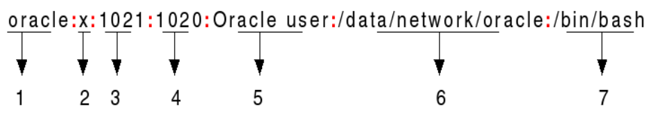

reads the passwd file
it stores user account information, user ID, group ID, home directory, shell, and more. essential during login
users other then root and default system users will be shown at the bottom.
format:
yahel:x:1000:1000:yahel abraham,,,:/home/yahel:/usr/bin/zsh

1. username
2. password - an x character indicates that encrypted password is stored in /etc/shadow file.

3. user id - each user must be assigned a user ID (UID).
UID 0 (zero) is reserved for root and UIDs 1-99 are reserved for other predefined accounts. Further UID 100-999 are reserved by system for administrative and system accounts/groups.
4. group id
5. user id info (GECOS) - a comment field. It allow you to add extra information about the users such as user’s full name
6. user's home dir
7. shell path - the absolute path of a command or shell (/bin/bash).
Typically, this is a shell. Please note that it does not have to be a shell.
For example, sysadmin can use the nologin shell, which acts as a replacement shell for the user accounts. If shell set to /sbin/nologin and the user tries to log in to the Linux system directly, the /sbin/nologin shell closes the connection.